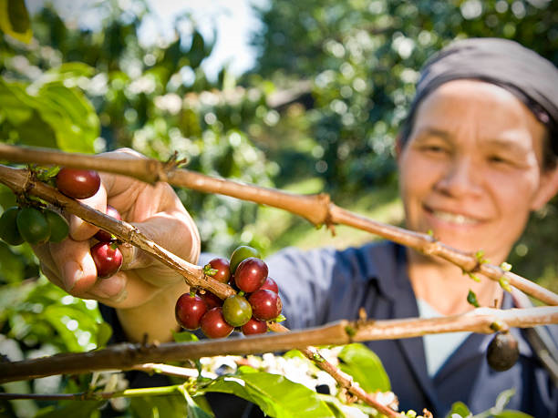
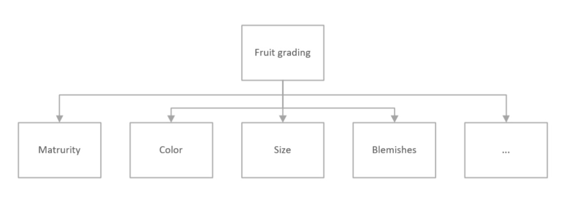

Traditionally when farmers pick out fruits from their field, they have to manually sort out the rotten ones from the good ones by the colors or the surfaces. This process typically takes a large amount of time and labor. Furthermore, due to the quick grading by farmers, they cannot grade the fruits accurate enough. 
Fruit grading may consists of several different criteria. Maturity, size, color, blemishes, etc. are all considered when grading is performed.  Now imagine a technology which automatically does this classification: farmers put all the fruits on the conveyor belt, and a computer will find the rotten ones using computer vision related techniques to pick up the rotten fruits in a separate basket. Furthermore, the good quality of fruits is graded to different sales channels.